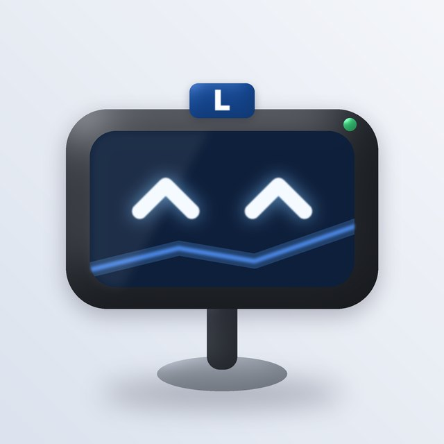
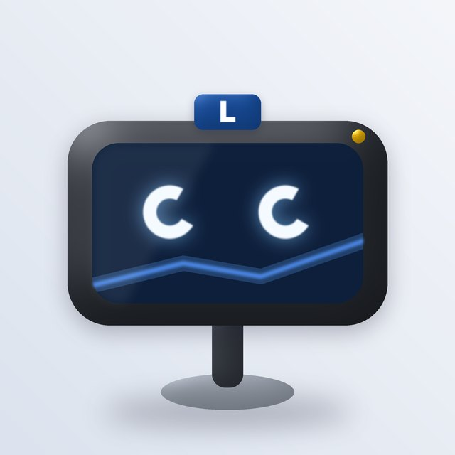
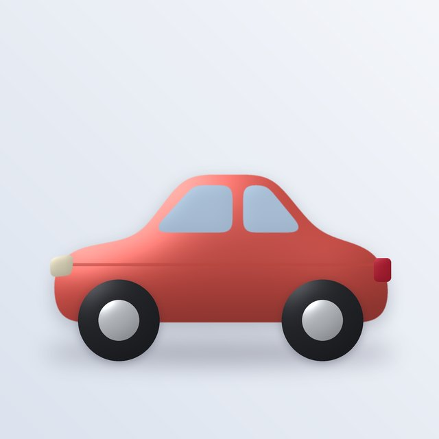
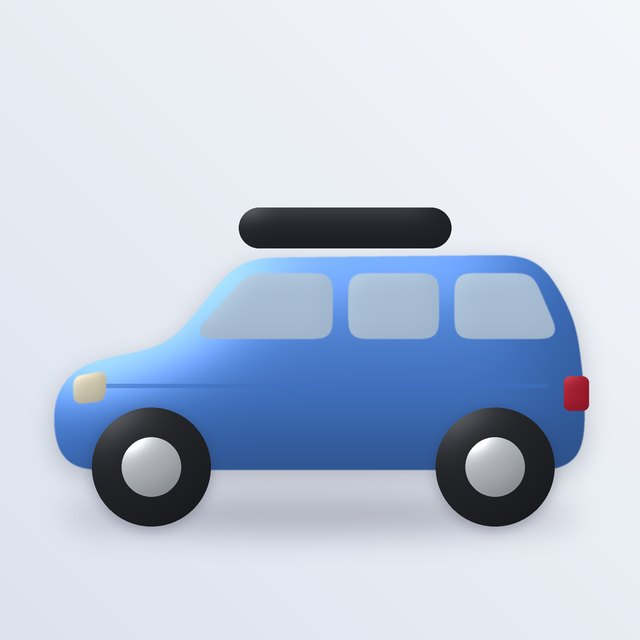
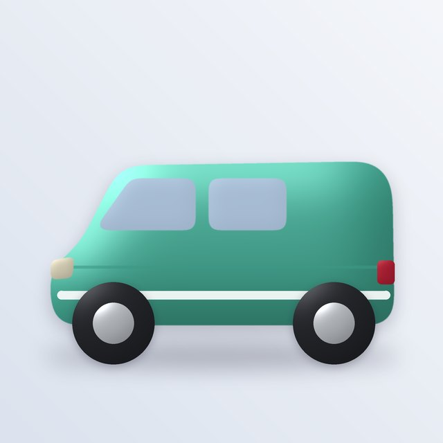

Turbo rides on your dashboard
You pick and customise your car, Relanti. Turbo is the sat nav mounted on its dashboard. He knows the route to the exam, and he talks to you the way a good instructor does: one short line at a time.
 Atento
Atento Explica
Explica
¡Bien! ¿Desvío?
¿Desvío?
RecalculandoHow a learner meets him

Utilitario
Familiar
FurgoTurbo's rules
One line at a time
Like a real sat nav, he says one short thing and then lets you drive. A truco never runs longer than two lines.
"Recalculando", never "wrong"
Every miss uses the same calm sat nav line. The right answer is shown, with the truco, and then you continue.
Silent in the exam
In simulacros he shows only the clock, because the real exam gives no help. That keeps the practice honest.
His screen does the work
Eyes most of the time, but the screen can also show a sign, a turn arrow or a speed, so he points at the content himself.
Lives in any car
He's mounted in whatever Relanti you choose. Change your car and he comes with you, so the guide and your avatar never compete.
Optional voice
Trucos can be read aloud with the system voice, like a sat nav. That helps people who study on the bus with headphones.
Renders made with Scripts/turbo/turbo.py (the Rumbo technique). The question and truco examples are illustrative; the article references must be checked during content work.